For thirty years the web was something you watched. In korba, you and your agents work on the same page, terminal and document.
korba.ai · free for Mac · Tauri 2, Rust, MCP, Claude, Cloudflare
01Under the hood

← swipe to see the whole diagram →
02Architecture decisions
K-01 · korba · Apr 2026validated
Leave Electron for Tauri 2 and the system WebView
Context
Google blocks sign-in inside embedded Chromium (disallowed_useragent), so users couldn't open Gmail or Drive in korba. And node-pty can't pass the Mac App Store sandbox.
Decision
Move to Tauri 2 with WKWebView and an explicit Safari user agent. Prove it first with a 5-day spike: renderer sealed, one success criterion per day, abort if any day fails.
Evidence
Day 3 was the whole thesis: a real Google login end-to-end. It passed on 24 Apr 2026, no OAuth fallback needed.
Consequence
Rust backend (25+ modules), native PTY, a smaller app. Accepted risk: a standing bet that Google's detection doesn't tighten.
K-02 · korba · 2026accepted
One play engine: shared context, smart wiring
Context
Plays (multi-step agent pipelines) handed off between steps through a rigid JSON block. If step A didn't emit the exact shape, step B silently did nothing.
Decision
Retire the JSON hand-off. Run every play as one continuous agent turn, and reshape each step's output to fit the next step's input in flight.
Evidence
The silent-failure bug lived in the hand-off path itself; removing the path removes the bug class.
Consequence
Gate what the agent composes (grey dot, plain-language plan, explicit run); trust what the user saved. The difference teaches the trust model.
K-03 · korba · May 2026accepted
No accounts first
Context
Accounts become a gravity well: every feature starts to require one.
Decision
Identity is a publisher keypair in the macOS Keychain, exportable as an encrypted file. Accounts are a power-user upgrade, never a gate.
Evidence
The test for every feature: can someone without an account publish a space, get 500 followers, and have them receive updates?
Consequence
Free tier is genuinely useful; paid tier is publisher tools (sync, analytics, vanity URLs).
K-04 · korba · May 2026accepted
Sharing is acquisition: never tax distribution
Context
Every shared space is opened by someone who may not have korba yet.
Decision
Sharing stays free and unlimited; price the value received, not distribution. Count the loop end to end with an anonymous install id.
Evidence
Share link → download → install attribution proven end to end on real Macs, with no accounts and no database.
Consequence
Growth and monetisation run on one loop: publish → distribute → consume → count → dashboard.